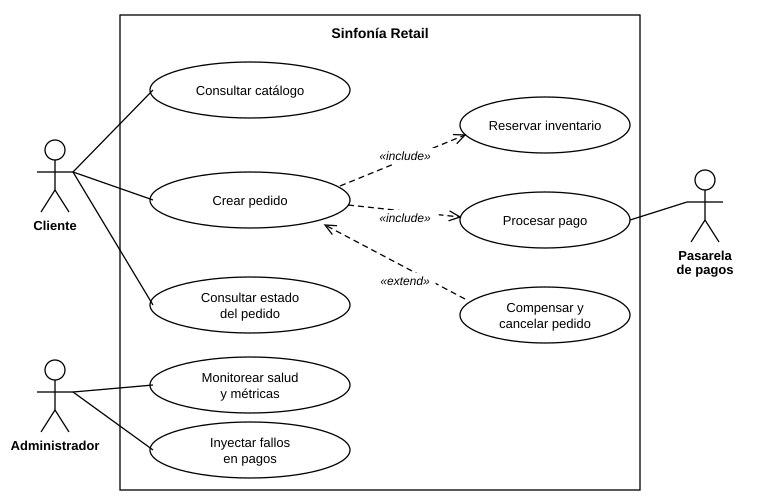
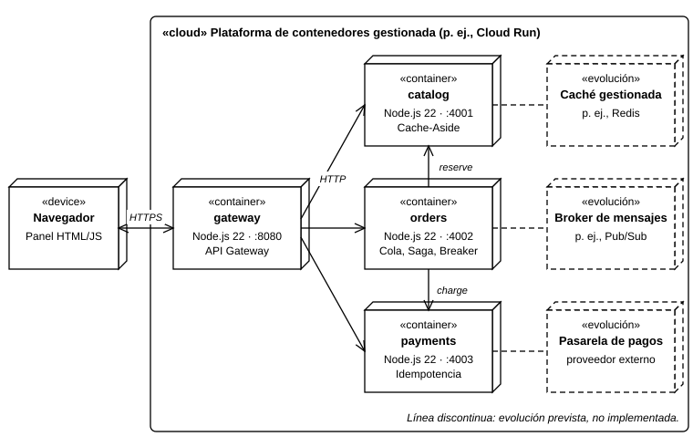

Orquestando códigos: la sinfonía de los sistemas
Arquitectura de microservicios en la nube para Sinfonía Retail
David Amaya
Tecnológica del Oriente · Arquitectura de Software · Unidad 1, Actividad 2
Contenido
- 1. El problema y los requisitos
- 2. Diseño de la arquitectura con UML
- 3. Patrones de diseño para la nube
- 4. Prototipo: demostración, pruebas y mediciones
- 5. Ejecución en la nube, conclusiones y limitaciones
El problema: un monolito que no resiste las campañas
- Las visitas se multiplican en campañas y el sitio se degrada
- Si la pasarela de pagos se demora, todo el sitio deja de responder
- Pedidos simultáneos reservan la misma existencia: sobreventa
- Cada corrección obliga a desplegar la aplicación completa
Meta: una arquitectura modular, escalable por partes, tolerante a fallas de terceros y desplegable en la nube.
3 / 20Requisitos funcionales
Cliente
- RF-01 Consultar el catálogo
- RF-02 Crear un pedido
- RF-05 Consultar el estado del pedido
Sistema
- RF-03 Reservar inventario sin sobreventa
- RF-04 Procesar el pago
- RF-06 Cancelar y liberar inventario si el pago falla
Administrador
- RF-07 Ver salud y métricas
- RF-08 Simular fallos de la pasarela de pagos
Requisitos no funcionales como escenarios medibles
| Atributo | Escenario | Mecanismo |
|---|---|---|
| Desempeño | Lectura repetida del catálogo en menos de 10 ms | Cache-Aside |
| Escalabilidad | Ráfaga de 40 pedidos: mediana de aceptación menor a 100 ms | Cola de trabajo |
| Tolerancia a fallos | Rechazo en menos de 50 ms con el circuito abierto; recuperación 5 s después | Circuit Breaker y Retry |
| Consistencia | Ningún pedido cancelado deja inventario reservado | Saga e idempotencia |
| Mantenibilidad | Cada servicio se modifica y despliega por separado | Servicios y API Gateway |
| Portabilidad | Se ejecuta en cualquier plataforma de contenedores | Imagen única |
| Operabilidad | Salud y métricas en menos de 1 s | Health Endpoint Monitoring |
| Seguridad | Un cliente no puede saturar el sistema | Límite de tasa |
Estilo arquitectónico: microservicios
API Gateway
Punto único de entrada, límite de tasa y salud agregada
Catálogo
Productos, inventario y reservas idempotentes; Cache-Aside
Pedidos
Cola de trabajo, saga orquestada, Retry y Circuit Breaker
Pagos
Cobro idempotente e inyección de fallos
Cada servicio tiene su responsabilidad y su estado; ninguno comparte base de datos.
6 / 20Diagrama de casos de uso

Diagrama de clases

Diagrama de secuencia: creación de un pedido

Diagrama de despliegue

Patrones de diseño seleccionados
| Patrón | Problema que resuelve | Requisito |
|---|---|---|
| API Gateway | Los clientes no deben conocer los servicios | Mantenibilidad, operabilidad |
| Cache-Aside | Lecturas repetidas sobrecargan la fuente de datos | Desempeño |
| Queue-Based Load Leveling | Las ráfagas saturan el procesamiento síncrono | Escalabilidad |
| Saga orquestada | No hay transacción distribuida entre catálogo y pagos | Consistencia |
| Circuit Breaker | Una dependencia caída propaga el fallo | Tolerancia a fallos |
| Retry | Los fallos transitorios no deben cancelar pedidos | Tolerancia a fallos |
| Idempotent Receiver | Un reintento no debe cobrar ni reservar dos veces | Consistencia |
| Health Endpoint Monitoring | El operador debe saber qué componente falló | Operabilidad |
| Rate Limiting | Un cliente puede saturar el sistema | Seguridad |
Justificación de las decisiones
Saga orquestada
- El pedido cruza solo dos servicios
- Un orquestador concentra la lógica
- Evita dependencias cíclicas
Retry + Circuit Breaker
- Retry absorbe fallos transitorios
- El interruptor corta los persistentes
- El reintento envuelve al interruptor
Alternativas descartadas
- Monolito modular: no aísla fallos
- Commit en dos fases: las pasarelas no lo ofrecen
- Base de datos compartida: acoplamiento
Prototipo: estructura del repositorio
sinfonia-retail/
src/services/ catalog · payments · orders · gateway
src/shared/ circuit-breaker · retry · cache · queue · http
public/ panel web de demostración
test/ 12 pruebas (unitarias e integración)
scripts/ bench.mjs (mediciones)
docs/ informe APA 7 y diagramas UML
Dockerfile · docker-compose.yml · README.mdNode.js 22, módulos ES, sin dependencias externas.
13 / 20Demostración 1: caché y cola de trabajo
Medido con node scripts/bench.mjs
14 / 20Demostración 2: caída del servicio de pagos

- Se inyecta 100 % de fallos en pagos
- Primer pedido: cancelado en 481 ms (agota reintentos)
- Pedidos siguientes: cancelados en cerca de 20 ms, con el circuito abierto
- Inventario del violín: 25 unidades, la compensación liberó cada reserva
- Tras 5 s: circuito semiabierto, prueba exitosa, circuito cerrado
Pruebas y mediciones frente a los umbrales
| Escenario | Umbral | Resultado | Cumple |
|---|---|---|---|
| Lectura del catálogo | Menos de 10 ms con caché | 118,6 ms sin caché; 0,7 ms con caché | Sí |
| Ráfaga de 40 pedidos | Mediana menor a 100 ms | 26,8 ms; 40 aceptados en 42 ms | Sí |
| Caída de pagos | Menos de 50 ms con circuito abierto | 481 ms el primero; luego cerca de 20 ms | Sí |
| Recuperación | A los 5 s de restablecer el servicio | Pedido CONFIRMED a los 5,2 s | Sí |
| Consistencia | Sin reservas huérfanas | Violín: 24 de 25 (un pedido confirmado) | Sí |
12 pruebas automatizadas (5 unitarias y 7 de integración): todas pasan con npm test. Una ejecución local representativa.
16 / 20Ejecución en la nube y repositorio
- Imagen de contenedor única, configurada con variables de entorno
- SERVICE=all: un contenedor que escucha en el puerto de la plataforma (p. ej., Cloud Run)
- docker compose up: los cuatro servicios por separado
- Verificado en ejecución local; despliegue documentado en el README
- Repositorio: código, pruebas, diagramas, informe y guion de mediciones
Conclusiones
- Servicios y API Gateway: modularidad
- Cola y Cache-Aside: escalabilidad y rendimiento
- Retry, Circuit Breaker y saga con compensación: tolerancia a fallas sin perder consistencia
- Los cinco escenarios medidos cumplieron sus umbrales
- UML permitió trazar cada requisito hasta un componente
Limitaciones y trabajo futuro
Limitaciones
- Datos en memoria
- Cola local al proceso: un reinicio pierde pedidos pendientes
- Pasarela de pagos simulada
- Sin autenticación
En producción
- Broker de mensajes en lugar de la cola local
- Base de datos gestionada por servicio
- Caché compartida
- Autenticación en el Gateway y trazabilidad distribuida
Trabajo futuro
- Medir bajo carga sostenida en la nube
- Validar las mismas métricas fuera del entorno local
Gracias
David Amaya
Informe técnico, código fuente e instrucciones de ejecución en el repositorio